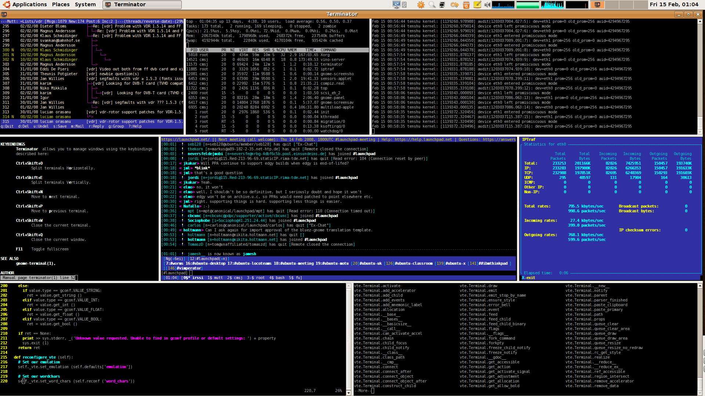

command-line-fu for web developers
because
$ [ $(man bash | wc -l) -gt 3000 ] && exit
David Winterbottom | @codeinthehole

Why you should care...
- Lots of real-world problems are text based
- Everyone needs to work on remote servers
- Commandlinefu -> big productivity gains
- Many developers only know IDEs...
- ...but real hackers use the commandline...
- ...as it gives you God-like powers
* IDEs can lead to lack of understanding of the tool (eg SVN)
* I am a big fan of commandline and am creator of commandlinefu.com, from
which many of these tips come from.
* Am not a massive expert, more a collector. Am not a sysadmin
Disclaimer
- Mainly talking about BASH here
- Most tips are transferable to any (unix) terminal...
- ...but many are BASHisms (not part of POSIX)
Overview
- What everyone should know...
- History
- MySQL
- SSH
- BASH Shortcuts
- Miscellany
-- basics not really that basic
-- talk for anyone who types stuff in linux
-- there are lots of bash features that can make your life easier / improve productivity
-- sense of power
What everyone
should know
UNIX toolset
- Learn the basic utilities:
grepSearching for text pattern awkScript language for text-processing sedTextual transformations wcCounting lines/chars findSearching for files psInformation on running processes - http://en.wikipedia.org/wiki/List_of_Unix_programs
- unix philosophy of doing one thing well
- basic building blocks
- awk is a scripting language
- awk and sed are turing complete
- computation of string STDIN input
I/O redirection
- Learn how to handle input (STDIN) and output (STDOUT, STDERR):
$ command > outfileRedirect output to file $ command >> outfileRedirect output and append to file $ command 2> outfileRedirect STDERR $ command &> outfileRedirect STDOUT and STDERR $ cat example.txt | wc -lPipe output (STDOUT) from one program into another (as STDIN)
-- with knowledge of the core tools and the various mechanisms for
chaining them together - an awful lot of power is at your disposal
-- pipes and filters (sed,grep)
Example
$ head -10000 /var/log/apache2/access.log | awk '{print $1}' | sort | uniq -c | sort -rn | head
- Prints the top 10 IP address from your apache access log
head -10000- Grab first 10000 linesawk '{print $1}'- Select first field from each linesort- Sort STDIN alphabeticallyuniq -c- Return frequency of each linesort -rn- Sort numerically (in reverse order)head- Grab top 10 results
Lesser known commands: tee
echo "example" | tee file.txt
- Duplicates output of a program to a file and STDOUT
echo "example" | sudo tee root-owned-file.txt
- Can be used to elevate privileges for redirection
echo "example" | tee >(rev) >(sed 's/e//g')
- Process a pipe with 2 or more processes
-- we'll see a clever use of this with vim later on
Lesser known commands: at, batch
$ echo "ps aux > ~/stats.txt" | at 23:00
- Allows one-off commands to be scheduled for a certain time
$ echo "~/put-kettle-on.sh" | at teatime
- Sophisticated time specifications
- Job list can be inspected with
atq
echo "~/heavy-process.sh" | batch
- Only runs command when system load drops below 1.5
Lesser known commands: locate
$ locate couch
/etc/couchdb
/etc/couchdb/default.d
/etc/couchdb/default.ini
/etc/couchdb/local.d
/etc/couchdb/local.ini
- Finds file by name
- Searches databases prepared by
updatedb - Searches for
*$PATTERN*
Lesser known commands: apropos
$ apropos couch
couchdb (1) - Apache CouchDB database server
couchdb-dump (1) - a CouchDB dump utility
couchdb-load (1) - a CouchDB load utility
couchjs (1) - Apache CouchDB JavaScript interpreter
couchpy (1) - a CouchDB Python view server
- Searches man pagenames and descriptions
Combining commands: &&, ;
$ (markdown README.md > md.html) && x-www-browser md.html
- Conditionally execute command
$ ./long-running-local-job.sh ; notify-send "Job is now finished"
$ ./long-running-process.sh ; eject
- Notify when long-running LOCAL job finishes
$ ./long-running-remote-job.sh | mail -s "Job is finished" root@commandlinefu.com
- Notify when long-running REMOTE job is finished
Beep when server comes back up
$ ping -i 60 -a $IPADDRESS
- Ping every 60 seconds
- Beep when a packet is received
History
Retrieving commands
- Aim is to never have to retype previous commands.
- Major productivity boost
- Various ways to search history:
- Pressing UP lots...
- Ctrl+R - reverse history search
- matches any line that contains search query
- "bookmark" commands with comments
- Use readline library...
-- default configuration can be improved
-- hackers don't press UP
Incremental search
- Add following to your
~/.inputrc"\e[A": history-search-backward "\e[B": history-search-forward "\e[C": forward-char "\e[D": backward-char
- Type a few characters and press UP
- This works for any REPL library that uses readline (eg, MySQL, Python)
- Life-changing productivity boost
More inputrc tips to come
History file tweaks
- Keep a large history to maximise re-use
- In
~/.bashrc:export HISTFILESIZE=10000Max number of lines in HISTFILEexport HISTSIZE=10000Number of lines to save from current session shopt -s histappendAppend to history file rather than overwriting export HISTCONTROL=erasedupsDon't store duplicate commands export HISTIGNORE="[bf]g:[ ]*:exit"Control which commands to ignore
History expansion 1: Event designators
- Shorthand/DSL for retreiving and manipulating historical commands.
$ !12Command number 12 from ~/.bash_history$ !-2Command before last $ !ziLast command that started 'zi' $ !!Last command (same as !-1) - Commands are executed immediately
- beware of getting too cryptic
- see man bash for more details
- !! is an event designator
Digression: This time I mean it!
$ sudo !!
!!plucks last command from history- BASH-specific
- Super useful!
$ say "make me a sandwich"
say: what? make it yourself.
$ sudo !!
$
Digression: Oops - forgot the sudo
:w !sudo tee %
- Vim equivalent of
sudo !! - For when you forget to edit file with sudo
:wpasses file contents to command as STDIN%is filename- Add shortcut in
~/.vimrc
cmap w!! %!sudo tee > /dev/null %
History expansion 2: Word designators
- Shorthand for referencing 'words' from previous commands.
$ !$Last word from previous command (better to use ALT+.) $ !:2Second (0-indexed) word from last command $ !^First argument (word 1) from last command
History expansion 3: Modifiers
- Modifies behaviour of preceding event/word designators
$ !zip:pPrint previous command starting 'zip' but don't execute it $ cd !$:hChange directory to "head" of previous last argument (similar to using dirname)$ !!:s/foo/barExecute previous command but replace 'foo' with 'bar' $ ^foo^barShorthand for the above
Magic space
- History expansion can lead to very cryptic commands
- Use "magic space" to expand commands before executing
- In
~/.inputrc
$if Bash
Space: magic-space
$endif Alias common commands
history | awk '{print $2}' | sort | uniq -c | sort -n | tail
- Find your most used commands
- Create aliases in
~/.bashrcalias pu='phpunit --colors' alias ip='ipython'
-- some commands support their own form of aliasing (eg git)
Script common actions
- Write scripts for common jobs
- Create a local
binfolder on your path
PATH="/home/david/bin:$PATH"
export PATH
MySQL
~/.my.cnf - Easy authentication
- For user-specific options
- Add some user credentials (read-only access):
[client] user = local-user password = s3cr3tp455w0rd
- MySQL commandline utilities no longer prompt for user/password
- Ensure file is only readable by your user
$ chmod 600 ~/.my.cnf
- for setting user-specific options
~/.my.cnf - Custom prompt
- Add useful information to your prompt:
[mysql] prompt=(\\u@\\h) [\\d]>\\_
- Show user, host and selected database:
(root@localhost) [wl_demo]> SELECT User,Host from mysql.user;
Remote backups
$ ssh $HOST 'mysqldump $DATABASENAME | gzip' > /var/backups/backup-`date +%Y-%m-%d`.sql.gz
- Creates a backup of a remote database (creating a file using today's date)
- Needs a remote
~/.my.cnfto avoid authentication prompt - Runs nicely from
cron
Copy database between machines
$ mysqldump -p -h $HOST -u $USER $DATABASENAME | mysql -D $DATABASENAME
- Copies SQL over the wire
mysqlreads SQL from STDIN
$ mysqldump -p -h $HOST -u $USER $DATABASENAME | sed 's/@[a-zA-Z0-9.]*/@localhost' | mysql -D $DATABASENAME
- Anonymise email addresses as part of copy
Monitor queries
$ watch -n 1 "mysqladmin processlist"
- Shows query list every second
watchis a useful command to know
Complex SQL queries
$ echo "SHOW TABLES LIKE 'App__%'" | mysql -D $DATABASENAME | sed "1 d" | awk '{print "DROP TABLE `"$1"`;"}' | mysql -D $DATABASENAME
- Drops all tables that match
App__% - Dynamically build SQL using
awk sedis used to discard header line- Better to
echoin SQL than use-eoption
piping is better than mysql -e
Maatkit (mk-*)
- Toolkit for open-source databases (mainly MySQL)
- Provides 28 very useful executables
$ mk-find --engine MyISAM --exec "ALTER TABLE %D.%N ENGINE=InnoDB"
- Finds MyISAM tables and converts them to InnoDB
mk-findis like GNUfindbut for tables
Secure Shell (SSH)
Secure Shell (SSH)
- Much more than logging into remote machines and copying files
- Also supports:
- executing remote commands
- tunnelling
- port forwarding
- X11 connections
- replacement for telnet
- network protocol using pulic key cryptography
- typically used for logging into a remote machine
SSH 101
$ ssh user@host |
Login to remote host |
|---|---|
$ ssh user@host 'ls /tmp' |
Execute command on remote host |
$ scp file.txt user@host: |
Copy file to remote host |
Public keys
-
Benefits of using a public key:
- password-less access to remote host
- more secure and flexible
- use a passphrase (and an authentication agent)
$ ssh-keygen -t rsa |
Generate public key |
|---|---|
$ ssh-copy-id user@host |
Copy public key to host |
$ ssh user@host |
No password prompt when logging in |
- eg github
- should use a passphrase - gnome keyring manager can take care of it for you
- or use ssh-agent to store it in memory
~/.ssh/config - Named hosts
- Add nicknames for commonly used hosts (with tab-complete support):
Host mysite-app1 HostName 74.117.251.129 User myuser Port 3162 - Global options
Host * Compression yes KeepAlive yes
- each option equivalent to a commandline option
Digression: custom prompts
david@earth:~ $
root@mysite-app1:tmp $
- In
~/.bashrc:if [ `id -u` = 0 ]; then PS1="\[\e[31m\]\u@\h:\W \$ \[\e[30m\]" else PS1="\[\e[34m\]\u@\h:\W \$ \[\e[30m\]" fi export PS1 - Keep useful information in your prompt
Mount using SSH: sshfs
$ sshfs $SERVER:/path/to/folder /path/to/mount/point
- Mount a folder through SSH
Edit a remote file using: vim
$ vim scp://user@host//path/to/file
- Opens remote file within Vim
$ vimdiff /etc/fstab scp://user@host//etc/fstab
- Also works with
vimdiff
Connect to unreachable hosts
ssh -t $REACHABLE_HOST ssh $UNREACHABLE_HOST
- Opens a SSH connection to the unreachable host
- Can be generalised to use any number of hosts
Cluster SSH
cssh mysite-app1 mysite-app2 mysite-app3
- Execute commands on multiple hosts at the same time
- Opens a window for each host...
GNU Screen
- Virtual terminal multiplexer:
- Multiple terminal sessions inside single terminal window
- Detaching and reattaching sessions
- Sharing sessions
- Meta commands start with Ctrl+A
- Get help with Ctrl+A then ?
--like a text version of a window manager
Miscellany
Terminal program
- Use a keyboard shortcut to open a terminal
- Alt+Space is good
- Learn your terminal program (eg
gnome-terminal):- Ctrl+Shift+T - open new tab
- Ctrl+Shift+W - close tab
- Alt+[1,2,...] - jump to nth tab
- Try multi-terminal programs (eg GNOME
terminator)

BASH keyboard shortcuts
- Lots available - look them up.
Ctrl + A Move to start of line Ctrl + E Move to end of line Ctrl + K Delete from cursor to end of line Ctrl + W Delete from cursor to start of word Ctrl + D Delete character / exit Ctrl + X, E Invoke $EDITORfor current command
Change to previous working directory
cd -
-is shorthand for previous directory- Equivalent to:
cd $OLDPWD
Brace expansion
cp /path/to/file{,.bak}
- Equivalent to:
cp /path/to/file /path/to/file.bak
- Can be used in sequences and with wildcards
$ cssh mysite-{app,db}{1..32}
$ ls *.{jpg,jpeg,png}
Follow log files
$ tail -f /var/log/apache2/error.log
- Run
tailin "follow" mode - Outputs appended data as the file grows
- Useful for watching log files while developing
$ less +F /var/log/apache2/error.log
- Run
lessin "follow" mode
Flush file
$ > /var/log/apache2/error.log
- Flushes contents of file
Search codebase
$ grep -inHr $QUERY ~/workspace/project | grep -v .svn
- Searches recursively for pattern
- Displays file and line number
grep -vfilters out unwanted results
Use python to server current directory
python -m SimpleHTTPServer
- Creates a dedicated server running on port 8000
-margument specifies a module to execute- Default behaviour of
SimpleHTTPServeris to run as webserver in current directory
sudo python -m smtpd -n -c DebuggingServer localhost:25
- Similar but creating a SMTP server
Query wikipedia using DNS
dig +short txt $KEYWORD.wp.dg.cx
- Requests TXT record...
- ...which is a snippet from Wikipedia for
$KEYWORD
Watch ASCII Star Wars using telnet
telnet towel.blinkenlights.nl
- See also
telnet towel.blinkenlights.nl 666
Summary
Summary
- Mastery of the shell is a key part of being a good developer
- A small amount of knowledge can make a big difference to your productivity
- Optimise you work-flow using shortcuts, functions, config files